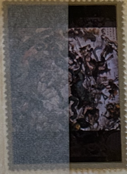
| SOURCE | TITLE| IMAGE MATCH | click to source page |
| MutualArt | Nicolás de Jesús | 5 Artworks at Auction | MutualArt | 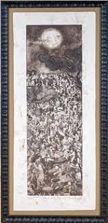 |
| Andrew Smith Gallery | Andrew Smith Gallery - Patrick Nagatani | 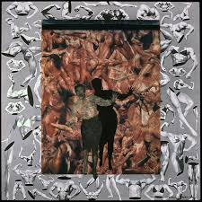 |
| Galerie Christophe Gaillard | Works - Déprogrammations | Galerie Christophe Gaillard | 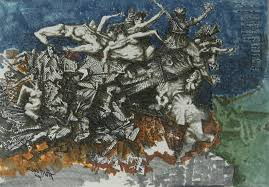 |
| Artsy | Oleg Litvinov | Virgin Clothed in the Sun (2025) | Available for Sale | Artsy | 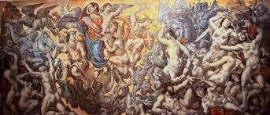 |
| my sweet sweet war horse, N.8 of my menagerie series. oil and leaf, 2025, 3ft by 6ft #horse #oilpainting #painting #artist #art | 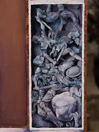 | |
| Etsy | Altered Antique Oil Painting After Albrecht Dürer, Renaissance Art, Original Artwork, Paper or Canvas Print, 8x10, 11x14, 16x20, 24x30 In - Etsy | 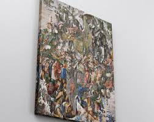 |
| Fine Art America | The Fight Between Scipio Africanus And Hannibal Bath Towel by Bernardino Cesari - Fine Art America | 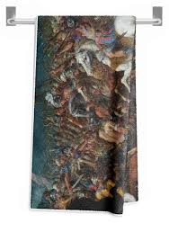 |
| metalposters.com | Tintoretto -Venice, 1519 -1594-. Paradise -ca. 1588-. Oil on canvas. 174.5 x 494 cm. Metal Poster by Tintoretto -1518-1594- - Metal Posters | 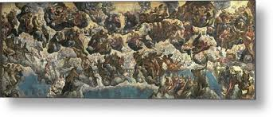 |
| Stamp Community Forum | Need Help To Identify Country - Stamp Community Forum | 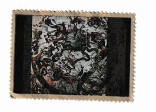 |
| Pattern Crew | Products 34 – Page 29 – Pattern Crew | 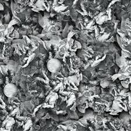 |
| aziz + cucher | Tapestries, 2014-2017 — aziz + cucher | 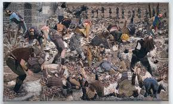 |
| Nicola Samori - すそ洗い | 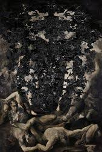 | |
| Fine Art America | The Rape of Helen #3 Canvas Print by Tintoretto - Fine Art America | 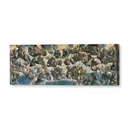 |
| Monroe Street Books | ORIG VINTAGE MAGAZINE ILLUSTRATION / OUR FAMOUS LOST BATTALION IN ARGONNE FOREST Schoonover (Illust.), Frank E., Illust. by: Frank E. Schoonover , Book Shop | Monroe Street Books | 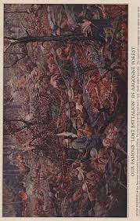 |
| WorthPoint | Jacob Bannon Converge seizures in barren praise print trap them | #269847057 | 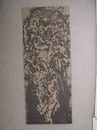 |
| Artnet | Nan Haiyan | artnet | 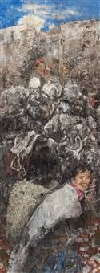 |
| Tolino | AFRICAN PASTS: Memory and history in African literatures | 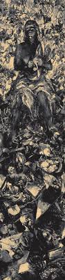 |
| pixels.com | Cain, No. 21 The Conscience, From The Legend Of The Centuries By Victor Hugo, 1859, 1880 Oil Beach Towel by Fernand Cormon - Pixels | 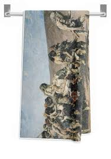 |
| OpenArt | baroque oil painting of key visual large scale samurai | Stable Diffusion | 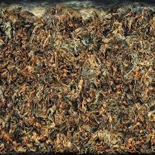 |
| Oxford University Press | FOURIERIST ART CRITICISM AND THE RVE DE BONHEUR OF DOMINIQUE PAPETY | 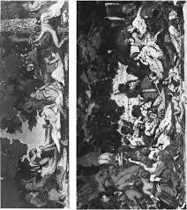 |
| Redbubble | Madonna of Bruges" Jigsaw Puzzle for Sale by Torifoster | Redbubble | 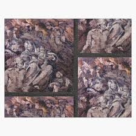 |
| Andrea Commodi — The Fall of the Rebel Angels, a preparatory drawing for a fresco (1612-1614) : r/DarkArtwork | 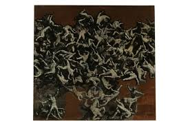 | |
| Wikimedia.org | File:Madonna dell'Orto (Venice) - Choir - The Last Judgment by Jacopo Tintoretto.jpg - Wikimedia Commons | 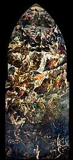 |
| Tintoretto | 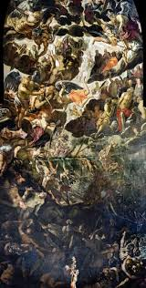 | |
| mmbioenergia.com.ar | 1990s Iconic renaissance 100% rayon shirt | 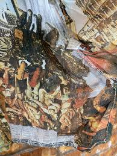 |
| おちゃのこネット | Test Prints - MEGAFAUNA WEB STORE Int'l | 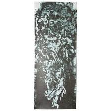 |
| Artnet | Fabian Marcaccio | Artnet | 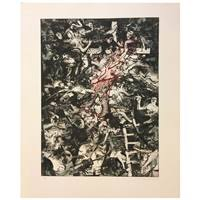 |
| luciaharrison.com | Lucia Harrison | 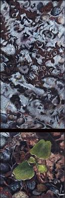 |
| www.wikiart.org | Nicola Samorì - 244 artworks - painting | 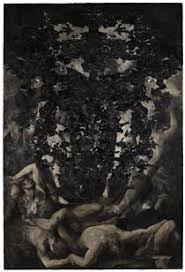 |
| WorthPoint | Jose Cuervo Tequila Reserva De Familia 2015 Jorge Mendez Blake Novel EMPTY BOX | #1861470268 | 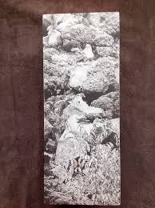 |
| eBay | Erwin Panofsky STUDIES IN ICONOLOGY Humanistic Themes in the Art 1939 1st ED/DJ | eBay | 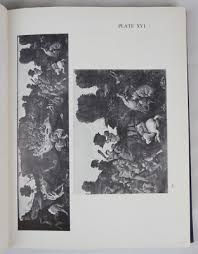 |
| We are thrilled to announce that Mandy Roland-Smith from @greengradsuk will be at this years show with her project Living Memory. Mandy Roland-Smith creates needle-felted panels, often dramatic in scale, that are | 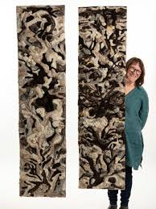 | |
| Album Online | Luca Giordano / 'Allegory of the Annexation of Messina to Spain', 1678, Italian School. Beach Towel by Luca Giordano -1634-1705- - Album | 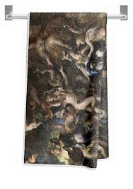 |
| bibelot & co | Free-form mirror with cherub decoration - Sold | 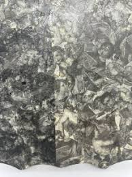 |
| The Big Pixel Inc. | Install AGA 90X90 2014 — The Big Pixel Inc. | 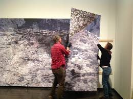 |
| PaintingZ | Campanula by Mikhail Vrubel Reproduction Painting for Sale | 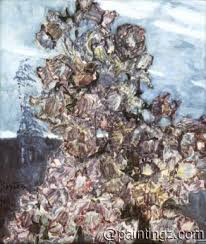 |
| Christie's | RICARDO CINALLI (ARGENTINIAN, B.1948) , CLASSICAL FIGURES IN A LANDSCAPE, TRIPTYCH | Christie's | 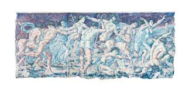 |
| Etsy | Altered Antique Oil Painting After Albrecht Dürer, Renaissance Art, Original Artwork, Paper or Canvas Print, 8x10, 11x14, 16x20, 24x30 In - Etsy UK | 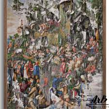 |
| MutualArt | Albin Brunovsky | Bella Italia IV. (1969) | MutualArt | 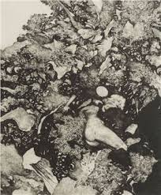 |
| 1stDibs | Egyptian Figures' Collage on Canvas by Jeet Chhabda, 1979 For Sale at 1stDibs | 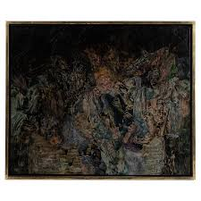 |
| The Blank Contemporary Art | NICOLA SAMORI' - The Blank Contemporary Art | 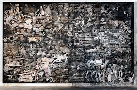 |
| Endless Grind | PVBLIC DOMAIN GRIP 9x33 CHAOS | 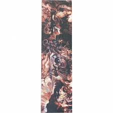 |
| Saatchi Art | Dina Belancic | Saatchi Art | 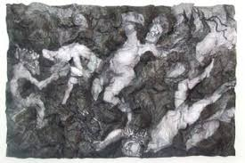 |
| Artsy | Howard Finster | Wipe Rag (1989) | Artsy | 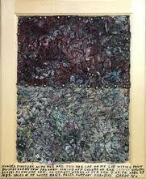 |
| Photolure | Prime Minister of Bulgaria Sergey Stanishev visits the memorial of Armenian Genocide Tsitsernakaberd | 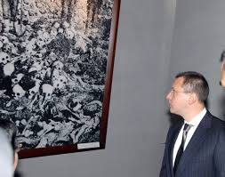 |
| Magnolia Box | The Battle of Naked Men, 16th century posters & prints by Domenico Campagnola | 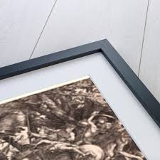 |
| MyTopo Map Store | Classic USGS Cherryville North Carolina 7.5'x7.5' Topo Map – MyTopo Map Store | 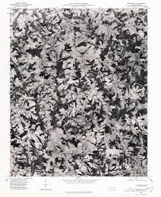 |
| Blogger.com | MAKING A MARK: Sunday Times Watercolour Competition 2018: Prizewinners & Selected Artists | 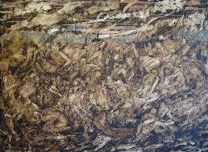 |
| The Eclectic Light Company | Pigment: The unusual green of Malachite – The Eclectic Light Company | 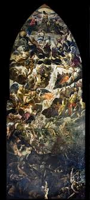 |
| Museo Reina Sofía | León Ferrariand M ira S chendel The Frenzied A lphabet | |
| SOAS | SOAS Financial Statement 2016_FINAL_with_signatures.indd | |
| Goodreads | Art Lovers - Art History: Art Trivia of the Day (2011: January through March) Showing 101-150 of 142 | |
| Museums Association | Museum, Gallery and Heritage | |
| Granger Art on Demand | Vandals Sack Rome, 455 A.d Adult Pull-Over Hoodie by Granger - Granger Art on Demand | |
| eBay | Federal Reserve Bank Shredded Briquette 1000 Notes US Currency Money 2.2 LB | eBay | |
| World Monuments Fund | Scuola Grande Di San Rocco | |
| Chimney Sheep | Chimney Sheep Herdwick Wool Project Felt | |
| ArtMajeur | Homogene-163, Painting by Jean Francois Bottollier | ArtMajeur | |
| Doug Beube | Doug Beube | |
| Internet Archive | Gróf Széchenyi István és hátrahagyott iratai. Ismerteti gróf Lónyay Menyhért : Lónyay, Melchior, Graf, 1822-1884 : Free Download, Borrow, and Streaming : Internet Archive |
_-_Choir_-_The_Last_Judgment_by_Jacopo_Tintoretto.jpg){kind=link}